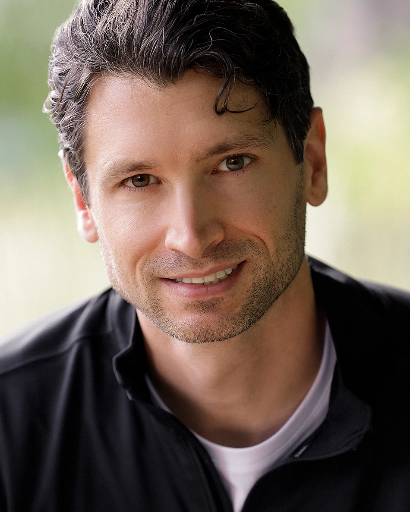

It’s Not Too Late to Save Your Marriage
Relationship turnarounds are possible, even after affairs, deep betrayal, or divorce papers have been filed.
With the right mindset, direction, and support, this crisis can become a turning point.
Does this sound familiar to you?
- You are walking on eggshells in your own home.
- You abandoned your own goals trying to keep her happy.
- Every serious conversation seems to make things worse.
- You fear she has started talking to lawyers, or someone else.
- You feel more stuck and alone than ever, unsure what to do next.
Maybe you have apologized, given her space, talked things through, read books, listened to podcasts, or even gone to counselling, yet nothing seems to change.
If you are like most men facing marital crisis, you aren’t lacking effort.
You may simply be using the wrong approach.
Why Coaching
Apologies and good intentions are rarely enough for things to change.
Coaching helps you understand what is going wrong, develop better relationship skills, and take consistent action.
Regain a sense of control
You can’t control your partner’s decisions, but you can change how you show up for your partner. Focusing on shifting your mindset, communication, and behaviour can create a healthier relationship dynamic.
Break unhealthy patterns
Relationship problems often follow predictable cycles. Coaching helps you recognize your role, respond differently, and break unhealthy patterns. This can disrupt the problems she has learned to expect.
Become stronger
The work you will do can benefit you beyond your marriage. Through coaching, you can become more grounded, self-aware, and resilient, as a partner, father and leader. You will gain skills in areas like emotional regulation and communication.

Meet Gabe
I founded avoiddivorce.com to create a better path for men facing marital crisis.
For much of my life, I was drawn to understanding and solving complex problems.
Today, I bring the same disciplined approach to relationships, human behaviour and personal change.
I help clients identify patterns they may not yet see, adopt a more useful mindset, and recognize where they still have meaningful influence. From there, we translate insight into deliberate action.
I believe that, with the right framework, direction, and support, a marital crisis can become a turning point in a man’s life.
- Ph.D., Western University
- Postdoctoral Fellowship, University of Alberta
How Coaching Works
We combine personal stabilization, insight and skills, with ongoing accountability.
Most men begin coaching feeling stressed, overwhelmed, reactive or desperate to repair their relationship immediately.
The first priority is to help you regain a stable personal baseline so you can think clearly and act with intention.
I work closely with each client to develop a purposeful plan forward. Together, we work to:
- Understand what is driving the marital crisis
- Identify patterns contributing to distance, conflict, and lost trust
- Develop a structured, multi-stage action plan
- Build emotional regulation, communication, and relational leadership skills
- Restore confidence, self-respect, and personal direction
We will apply new skills to the situations you are facing and adjust the plan as circumstances evolve.
Over time, you will build the judgement and confidence to navigate relationship challenges more effectively on your own.
While no one can guarantee how your partner will respond, consistent change can disrupt the patterns she has learned to expect, rebuild emotional connection, and give your marriage a genuine path towards recovery.
“We help you break destructive relationship patterns to give your marriage the best chance of success.”
The 3-Stage Process
Three stages of reconciliation, guided through coaching.
Stabilize
Establish the personal foundations you need to regain stability, think clearly, and act with intention.
Repair
Focus on relational repair and begin rebuilding trust, connection, and admiration.
Re-commit
Work towards renewed commitment and a shared sense of excitement about the future.
*Coaching supports personal growth and relationship development; outcomes vary depending on individual circumstances.
Frequently Asked Questions
Is it really possible to save my marriage if my wife says she’s done?
It may be. Relationships have recovered after prolonged conflict, emotional distance, betrayal, and discussions of separation or divorce.
No one can guarantee how your wife will respond. The goal of coaching is to help you understand what has contributed to the crisis, change the patterns within your control, and create the strongest possible conditions for reconciliation.
Can this work if my wife won’t participate?
Yes. Many men seek help after their wife has refused counselling or is emotionally withdrawn from the relationship.
You do not need to wait for her participation to begin changing how you think, communicate, regulate your emotions, and show up within the relationship. Consistent change can interrupt familiar patterns and give your partner a different experience of you.
How is this different from marriage counselling?
Marriage counselling generally works with both partners and focuses on the relationship between them.
This coaching begins with you. It is a structured process of personal development designed to help you gain clarity, adopt a more useful mindset, build practical relationship skills, and take purposeful action. The emphasis is not on persuading your wife to change. It is on becoming someone capable of changing the dynamic.
What if my marriage cannot be saved?
That possibility exists, and coaching cannot control another person’s decisions.
However, the work remains valuable. You can develop greater emotional resilience, self-awareness, confidence, communication skills, and personal direction: qualities that will benefit you as a man, partner, and father regardless of the outcome.
How long does the process take?
Every situation is different. Some men begin feeling calmer and more purposeful relatively quickly, while rebuilding trust and connection usually requires sustained effort over time.
This is not a quick fix. Meaningful change depends on the condition of the relationship, the patterns involved, and your consistency in applying what you learn.
How do I know whether coaching is right for me?
Coaching may be a good fit if you are willing to examine your own contribution to the relationship, learn new ways of responding, and consistently apply what you learn.
You do not need to accept all the blame, have all the answers, or feel certain about the future. You do need to be willing to take responsibility for the part that remains within your influence.
Is coaching a substitute for therapy or legal advice?
No. Coaching supports personal growth, mindset development, practical skill-building, and purposeful action.
It is not psychotherapy, crisis treatment, or legal advice. When a situation involves serious mental health concerns, abuse, immediate safety risks, or complex legal issues, additional professional support may be necessary.
What happens during the discovery call?
The discovery call is a relaxed, no-obligation conversation about your situation.
I will listen, answer your questions, explain how the coaching works, and help determine whether the program is a good fit. There is no sales script, and if I do not believe I can help you, I will tell you.
Not sure whether coaching is right for you?
The discovery call is a no-pressure opportunity to discuss your situation, ask questions, and see whether the program is a good fit. If I don’t believe I can help you, I’ll tell you.
Book your free discovery callReady to take the first step?
Apply for your free discovery call
If your marriage matters and you’re committed to becoming a better husband and man, I’d be honoured to speak with you.